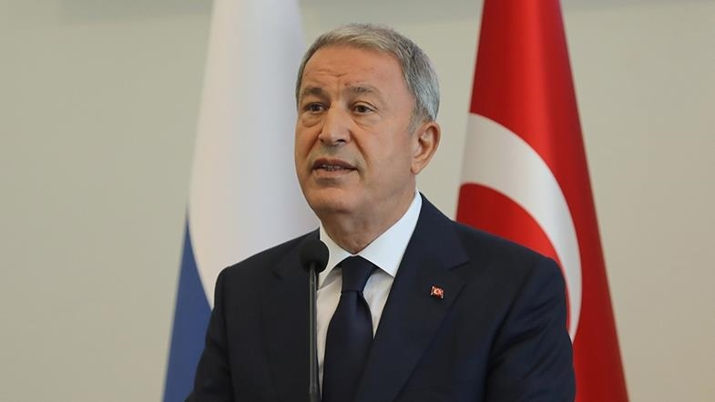

A trilateral memorandum recently signed at a NATO summit between Türkiye, Sweden and Finland is "not an
end, but a good start," Turkish Defense Minister Hulusi Akar said Thursday.
"We expect them to fulfill their commitments," Akar said at a news conference with his Latvian
counterpart Artis Pabriks in the capital of Riga where they discussed defense issues and NATO
cooperation.
During the NATO summit in Madrid late last month, the leaders of three countries agreed on a trilateral
memorandum to address Türkiye’s legitimate security concerns, paving the way for Finland and Sweden’s
NATO membership bids.
The deal stipulates that Stockholm and Helsinki will not provide support to the YPG/PYD, the PKK's
Syrian offshoot, nor to FETO, the group behind a 2016 defeated coup.
Türkiye, a member of NATO for more than 70 years, has pushed Sweden and Finland to meet their
obligations.
The PKK is listed as a terror organization by Türkiye, the European Union and the US and is responsible
for the deaths of 40,000 people, including women, children and infants.
